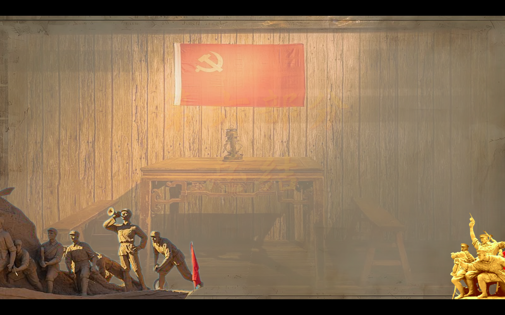
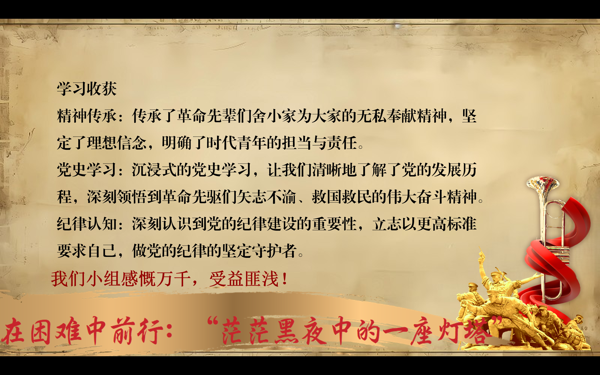
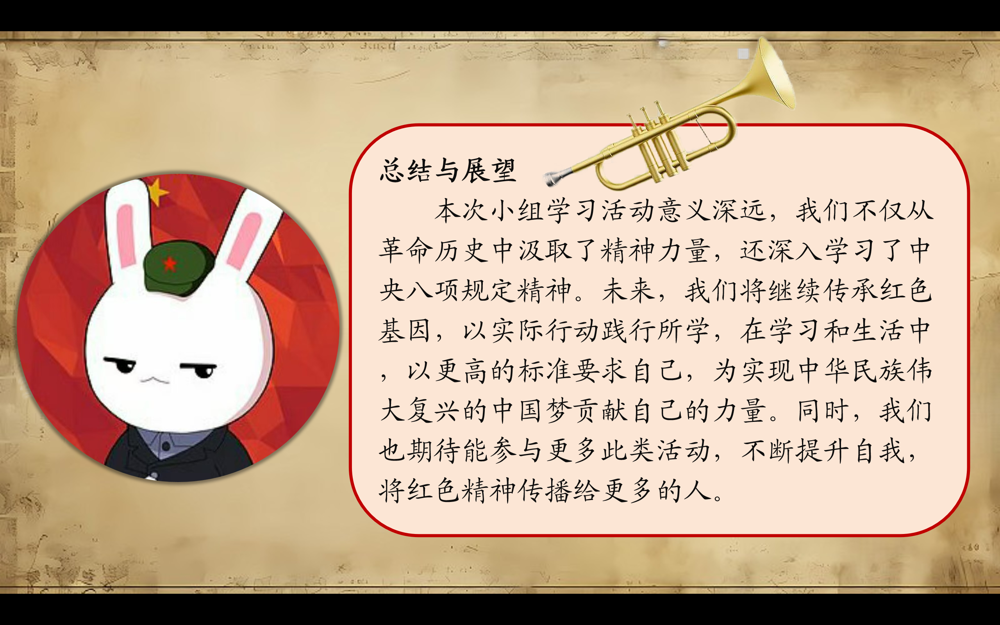
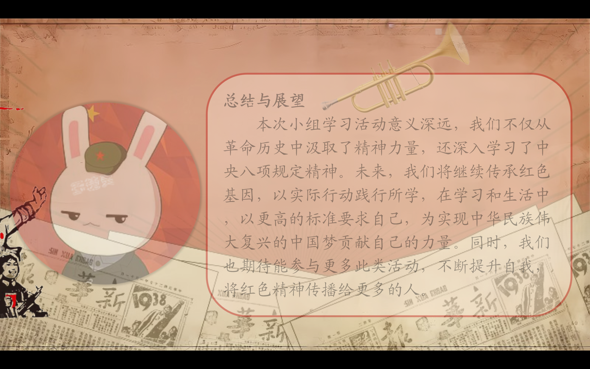

Journal · 2025-05-06
湖北省武汉市
我个人感觉，WPS的演示模板质量参差不齐，少有惊艳。在华中地区，本科生的小组作业滥用模板，千篇一律，严重“同质化”。教学楼的白板上，“劣质党政风”大行其道；奇丑无比的演示图文，不在少数。
笔者在党宣部，手搓了很多宣传资料，感慨良多。其实呢，PPT可以理解为，用于现场展示的漫画类的图文。观众真正想看的，是学者在台上的演讲。
需要强调的是，“PPT”是有中文名的，它叫“演示图文”或“演示”。黄州府的师长，有时也称其“课件”。
演示图文，切忌“花里胡哨”“炫技”！因为新时代的大学生，早就“审美疲劳”啦。况且评委老师和大厂领导们，也不待见“劣质党建风”，“炫酷科技风”就别提啦。
笔者常用的演示字体，就三样：演示秋鸿体，方正宋简体，草檀斋毛泽东字体。其中，“草檀斋毛泽东字体”特别潇洒！
至于演示中的图片，不消搞得太麻烦，直接去“视觉中国”网站上白嫖！版权法在很多时候，就是个屁！
值得一提的是，牛皮纸背景，观感还是挺舒服的。杨凯老师的“那兔”头像，总能给人一种气定神闲的感觉。
如果大家想要匠心独运，可以考虑在演示图文中，加几张好玩的漫画。能在TED演讲的大佬，都擅长展示漫画！
如果偏要在演示中搞“特效”，单用“平滑切换”，就很惊艳啦！
我现在发现，我似乎天生就干不惯那些花里胡哨的“形式主义”“面子工程”，我还是喜欢输入内容、整理文本、输出想法，这才是有意思的！






Personally, I feel the quality of WPS presentation templates is uneven and rarely impressive. In the Central China region, undergraduates abuse templates in their group assignments, all looking the same and seriously “homogenized.” On the whiteboards in teaching buildings, the “shoddy Party-and-government style” runs rampant; there is no shortage of hideously ugly presentations.
Working in the Party Propaganda Department, I hand-crafted a great deal of publicity material and had many reflections. Actually, a PPT can be understood as comic-style graphics and text used for on-site presentation. What the audience really wants to see is the scholar's speech on stage.
It should be emphasized that “PPT” does have a Chinese name — it is called “presentation graphics” or “presentation.” The teachers of Huangzhou Prefecture sometimes also call it “courseware.”
In presentation graphics, be sure to avoid “gaudy” and “showing off”! Because college students of the new era have long since grown “aesthetically fatigued.” Besides, the judging teachers and big-tech leaders don't look kindly on the “shoddy Party-building style” either, and as for the “flashy tech style,” let's not even mention it.
The presentation fonts I commonly use number just three: Yanshi Qiuhong, Founder Song Simplified, and Caotanzhai Mao Zedong. Among them, “Caotanzhai Mao Zedong” is especially dashing!
As for the images in presentations, there's no need to make things too complicated — just go freeload on the “Visual China” website! Copyright law, a lot of the time, is nothing but bullshit!
It's worth mentioning that the kraft-paper background is quite pleasant to look at. Teacher Yang Kai's “Na Tu” (the rabbit) avatar always gives one a sense of composure and ease.
If you want to show originality, you might consider adding a few fun comics to your presentation graphics. The big names who can give TED talks are all good at displaying comics!
If you insist on adding “special effects” to a presentation, just using “Morph” alone is already stunning!
I now realize that I seem naturally unsuited to all that flashy “formalism” and “vanity projects”; I still prefer inputting content, organizing text, and outputting ideas — now that's what's interesting!
Personnellement, j'ai l'impression que la qualité des modèles de présentation WPS est inégale et rarement impressionnante. Dans le centre de la Chine, les étudiants de licence abusent des modèles dans leurs travaux de groupe, tous identiques, gravement “homogénéisés”. Sur les tableaux blancs des bâtiments d'enseignement, le “style parti-gouvernement de piètre qualité” fait rage ; les présentations d'une laideur affligeante ne manquent pas.
Travaillant au département de propagande du Parti, j'ai fabriqué à la main beaucoup de supports de propagande et j'en ai tiré bien des réflexions. En fait, un PPT peut être compris comme des images et du texte de type bande dessinée destinés à une présentation en direct. Ce que le public veut vraiment voir, c'est le discours du savant sur scène.
Il convient de souligner que “PPT” a bien un nom chinois : on l'appelle “graphiques de présentation” ou “présentation”. Les enseignants de la préfecture de Huangzhou l'appellent parfois aussi “didacticiel”.
Dans les graphiques de présentation, il faut absolument éviter le “tape-à-l'œil” et la “frime” ! Car les étudiants de la nouvelle ère sont depuis longtemps atteints de “fatigue esthétique”. De plus, les enseignants jurés et les dirigeants des grandes entreprises technologiques n'apprécient pas non plus le “style de construction du Parti de piètre qualité”, et quant au “style techno tape-à-l'œil”, n'en parlons même pas.
Les polices de présentation que j'utilise couramment sont au nombre de trois : Yanshi Qiuhong, Founder Song Simplified et Caotanzhai Mao Zedong. Parmi elles, “Caotanzhai Mao Zedong” est particulièrement élégante !
Quant aux images des présentations, inutile de se compliquer la vie : allez simplement piocher gratuitement sur le site “Visual China” ! Le droit d'auteur, bien souvent, n'est qu'une vaste blague !
Il est à noter que le fond en papier kraft est plutôt agréable à regarder. L'avatar “Na Tu” (le lapin) de l'enseignant Yang Kai donne toujours une impression de calme et de sérénité.
Si vous voulez faire preuve d'originalité, pensez à ajouter quelques bandes dessinées amusantes à vos graphiques de présentation. Les grands noms capables de faire des conférences TED excellent tous à montrer des BD !
Si vous tenez absolument à ajouter des “effets spéciaux” à une présentation, le simple “Morph” suffit déjà à impressionner !
Je me rends maintenant compte que je semble naturellement inapte à tout ce “formalisme” et ces “projets de façade” tape-à-l'œil ; je préfère toujours saisir du contenu, organiser le texte et produire des idées — voilà ce qui est intéressant !
Persönlich habe ich das Gefühl, dass die Qualität der WPS-Präsentationsvorlagen uneinheitlich ist und selten beeindruckt. In Zentralchina missbrauchen Studierende im Bachelorstudium Vorlagen in ihren Gruppenarbeiten, alles sieht gleich aus und ist stark “homogenisiert”. Auf den Whiteboards in den Lehrgebäuden wuchert der “minderwertige Partei-und-Regierungs-Stil”; hässliche Präsentationen gibt es zuhauf.
In der Propagandaabteilung der Partei habe ich viel Werbematerial von Hand erstellt und dabei viele Gedanken gehabt. Eigentlich kann man eine PPT als comicartige Bilder und Texte verstehen, die für die Präsentation vor Ort bestimmt sind. Was das Publikum wirklich sehen will, ist der Vortrag des Gelehrten auf der Bühne.
Es ist zu betonen, dass “PPT” durchaus einen chinesischen Namen hat: Man nennt es “Präsentationsgrafik” oder “Präsentation”. Die Lehrer der Präfektur Huangzhou nennen es manchmal auch “Kursunterlagen”.
Bei Präsentationsgrafiken sollte man “Protzerei” und “Effekthascherei” unbedingt vermeiden! Denn die Studierenden der neuen Ära sind längst “ästhetisch erschöpft”. Außerdem können die Jury-Lehrer und die Führungskräfte der großen Tech-Konzerne den “minderwertigen Parteiaufbau-Stil” auch nicht leiden, und vom “schicken Tech-Stil” ganz zu schweigen.
Ich verwende üblicherweise nur drei Präsentationsschriften: Yanshi Qiuhong, Founder Song Simplified und Caotanzhai Mao Zedong. Darunter ist “Caotanzhai Mao Zedong” besonders schick!
Was die Bilder in Präsentationen angeht, braucht man sich nicht allzu viele Mühe zu machen — einfach auf der Website “Visual China” kostenlos zugreifen! Das Urheberrecht ist in vielen Fällen schlicht Schwachsinn!
Erwähnenswert ist, dass der Hintergrund aus Kraftpapier recht angenehm anzusehen ist. Der Avatar “Na Tu” (der Hase) von Lehrer Yang Kai vermittelt einem stets ein Gefühl von Gelassenheit.
Wenn ihr Originalität zeigen wollt, könnt ihr in Erwägung ziehen, ein paar lustige Comics in eure Präsentationsgrafiken einzufügen. Die Größen, die TED-Vorträge halten können, sind alle gut darin, Comics zu zeigen!
Wenn ihr unbedingt “Spezialeffekte” in eine Präsentation einbauen wollt, ist allein die Verwendung von “Morph” schon beeindruckend!
Ich merke jetzt, dass ich von Natur aus nicht für all das schicke “Formalismus” und die “Prestigeprojekte” tauge; ich bevorzuge nach wie vor, Inhalte einzugeben, Texte zu ordnen und Ideen auszugeben — das ist das, was Spaß macht!